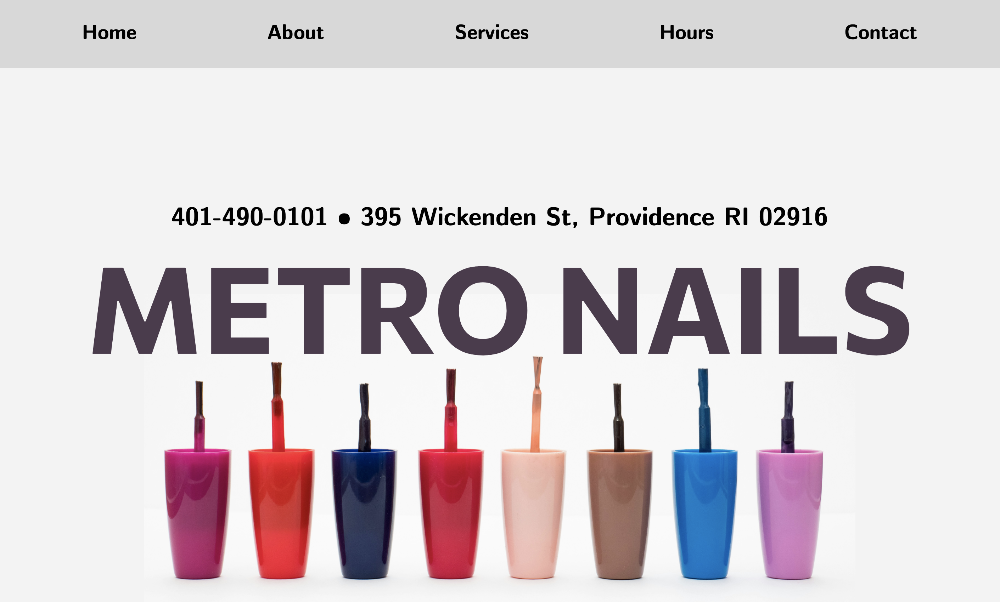

Welcome to my responsive redesign project submission page! This is my first project that actually combined design and coding. I am also pretty new to actually deploying usable and accessibility websites using HTML and CSS. Objectives of this project were to develop my ability to critique and identify problems with an existing website design, create prototypes of different screen sizes at high and low fidelity, and finally develop a responsive website from those prototypes.
I picked the website of a local business, Metro Nails Salon. I chose this website because it seems a bit rudimentary and needs some fixing, from the functional aspects to the design of the layout. You can find the link to the original website here.
In evaluating the salon's website, I focused on three core usability principles: Efficiency, Learnability, and Memorability. Efficiency measures how quickly users can achieve their goals on the site, like locating information or booking services, with minimal effort. Learnability assesses the ease with which first-time visitors can grasp and navigate the site. Finally, memorability gauges the user's ability to recall how to use the website effectively after an initial visit: this ensures that they can navigate it with ease even if they return infrequently.
In addition to analyzing usability based on the three aforementioned principles, I also used WebAIM WAVE to detect potential accessibility problems. The problems detected are 10 low contrast errors, and 3 missing alternative texts. WAVE also detected inappropriately sized text (too small). I partially agree with the detected problems — the low contrast errors and lack of alternative texts for the pictures would affect colorblind and the visually impaired. However, I do believe that the small text is an intentional design choice as they are a brief description of the source of the stock photos used to advertise the salon.
Overall, the website shows potential in efficiency and learnability but requires significant improvements in accessibility and certain functional aspects to enhance user experience.
I decided to redesign the homepage as this is the first thing a customer would see.
First, I started off with speed sketching, which was to sketch 9 options for my redesign on paper and sketching one option per minute. This was an opportunity to come up with potential solutions even though they might not be refined — they are just supposed to get the idea across.
Prior to the wireframing stage, I analyzed my sketches and put together the best parts (or the ones that I liked the most) from each of my speed sketches. This shows my final sketch which would serve as my final base for wireframing.
For each of the three device types (mobile, tablet, desktop), I created at least one wireframe where the content of the website remained the same, but adjusted accordingly for the size and dimensions of the screen. With the wireframes, I also aimed to mitigate the problems that I have described in Part 1. As can be seen below, the annotations describe how my wireframes solve those problems.
Before moving on to creating my high-fidelity mockups, I began to develop a visual design guide in order to make my designs more consistent. Here, I prioritized creating a cohesive and intuitive user experience through the guide by including a palette of colors and typography (with two primary typefaces for headings as one for body text). This would act as the foundation for the high-fidelity prototypes, ensuring that design elements and interactions across different screen sizes are consistent.
For the high-fidelity mockups, I focused on translating the visual design guide into more polished representations for mobile, tablet, and desktop screens. Each mockup includes adjustments made for each device's constraints. Each mockup is a direct evolution from the low-fidelity wireframes, keeping the core content and structure while staying as true as possible to the visual style guide. With this, I aimed to seamlessly transition from the concept to the final design.
The desktop mockup takes full advantage of the larger screen, with a more expansive layout.
The tablet version balances the mobile and desktop versions, and provides more space for content.
The mobile mockup emphasizes usability and readability on smaller screens, with a compact layout.
In the redesign of the webpage, I used only HTML and CSS. I started by outlining the HTML structure to further solidify the accessibility and SEO readiness. This is the base on which the hierarchy of content lies and what will also make the page more understandable for assistive technologies. Apart from this, I used CSS for the colors and fonts to align with what I came up with in the visual design guide. In terms of layout, Flexbox was used in order to create the flexibility that responsive design requirements demanded. You can find the website here.
In this section, I'll share the key takeaways and insights I gained from this project, which marked my first official experience in combining design principles with coding practices. Throughout this process, I practiced my ability to discern between what works and what doesn't in web interfaces. I went through the entire design process, starting from the initial ideation phase with quick sketches, advancing to more refined low-fidelity prototypes in Figma, and eventually creating detailed high-fidelity prototypes. This project has significantly boosted my confidence in navigating and using Figma as well.
A major lesson for me was understanding the critical role of HTML structure in shaping a website's accessibility and its implications for search engine optimization. Implementing the visual design through CSS, I did my best to ensure consistency with color schemes and typography. The project also allowed me to identify areas for further improvement. For example, I realized the limitations of using absolute units for font sizes, which can hinder the adaptability of text to browser settings. I also came to the conclusion that using a framework such as Bootstrap would facilitate easier transitions between layouts. As someone who's never used Bootstrap before, redesigning this website has made me eager to try out this framework (which I am actually using for this submission page).